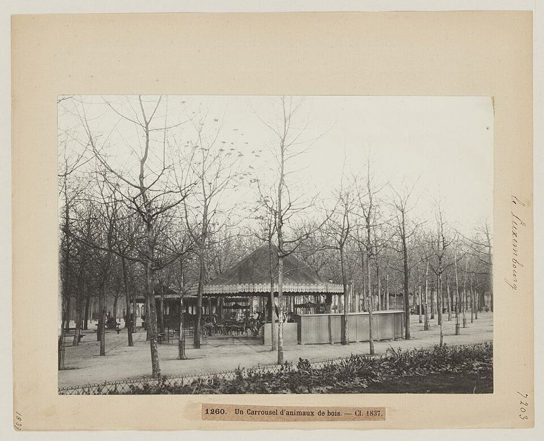
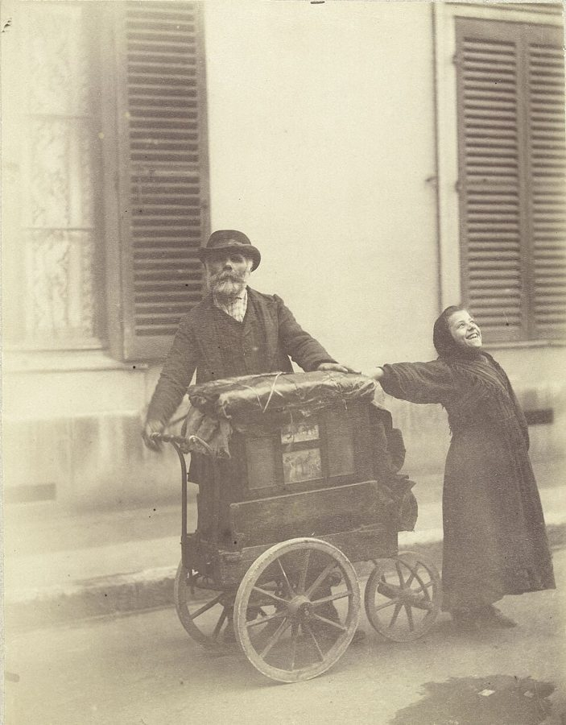

这一篇在做什么
作者半开玩笑地说，一家人搬来巴黎，真正的理由是让儿子 Luke 躲开美国儿童节目里那只紫色恐龙 Barney。头一年孩子看马戏、坐旋转木马，好像躲过去了；一次回纽约过圣诞，两岁多的 Luke 迷上了 Barney，录像带一路跟回巴黎。读的时候抓两条线：家里父子为 Barney 拉锯的小戏，和 §3 作者从这只恐龙一步跨到克林顿和美国人的那一大段。想想他为什么要拿一个孩子的口味去解释一位总统。

卢森堡公园里的木马转盘，约 1890 年的照片，比书里的年代早一百多年。§1 一家人在巴黎头一年坐了很多旋转木马，作者后来拿它比法国的旧制度。Hippolyte Blancard，CC0，维基共享资源 读之前：这篇的来历
文中能看出这一篇大约写于 1997 年春：§2 说「去年圣诞」回纽约，那时 Luke 两岁半（第 1 篇说他 1994 年 9 月出生）；§3 作者在冬天 CNN 的年度回顾里看到克林顿，他前一年 11 月刚连任。它在第三部分「从物件学到的」，前一篇写一家顶级餐馆的厨房和法国菜的危机，后一篇是第三篇圣诞日记。一家人这时已在左岸住了一年多，孩子每周上体操课，在院子里和法国小孩玩。这一篇接的是第 1 篇的一个心愿：第 1 篇 §3 说，当初来巴黎，就是想让孩子的头五年少受些美国媒体的包围。
逃到巴黎，能不能让孩子躲开美国？一个两岁孩子迷上一只紫色恐龙，作者为什么要扯到克林顿？
读的时候带着这几个问题。不用先找答案，读完回来对照「检查一下理解」。
作者说搬家是为了躲 Barney。这话有几分认真、几分自嘲？§1
孩子迷上 Barney，作者怎么应对？他对自己这个当父亲的是什么口气？§2
Barney 和克林顿到底像在哪里？作者是在骂他们，还是在说别的？§3
最后那句「我不喜欢 Barney」，为什么被作者推到所有美国人身上？§5

巴黎街头推手摇风琴的艺人和一个唱歌的小女孩，Eugène Atget 1898 年拍摄，比书里早一百年。§1 一家人搬来第一周，窗下就来了这样一位风琴师。Eugène Atget，CC0，维基共享资源 这一篇的路线
全篇五节，主线是一个「逃—追—追上」的家庭小戏：一家人为躲 Barney 搬来巴黎（§1），Barney 跟着录像带追来（§2），最后连法国小孩也被它迷住（§4）。中途作者两次把镜头拉远：§1 拿公园游乐场比法国史，只是一个玩笑；§3 整节离开家里，谈克林顿和美国人，这才是全篇的重心。读译本时最容易在 §3 开头读丢：孩子还在要恐龙，作者忽然谈起《纽约时报》的社论版。这不是跑题，是在回答 §2 留下的「为什么」。§5 最后一句又把孩子和全体美国人放在一起。
家里
拉远
§1
§2
§3
§4
§5
躲 Barney 才搬家
风琴、马戏、木马
游乐场＝法国史
「我喜欢 Barney」
一瓶勃艮第
法国没有 Barney
Barney＝克林顿
讨厌他的人
三个法国女孩
「我喜欢看」
美国式的眼神
本站示意图。橙点是家里这条线，蓝点是拉远的那条线，折线是阅读顺序，虚线是原书的分隔。§3 整节都在下面。 作者落在哪： 作者认为 Barney 和克林顿是同一种东西：不靠机智，不讲道理，只摸准观众的不安，跟着它一直摇摆；讨厌他们的人嫌的是俗，不是坏。巴黎躲不开它，因为它就在美国人自己身上：看穿了，还是移不开眼。作者管这叫「美国式的眼神」。
分节地图
原书这一篇有四处分隔，分成五节。每一节的粗体是读译本时认得出的场面；下面的斜体是英文这一节开头的几个词，打开电子书搜它就能跳到那里。读完一节打个勾。
风琴师接住十法郎，卢森堡公园的游乐场约 1000 词 When people ask why Martha … 搬家的「真正理由」，和父母想给孩子的那种童年。游乐场那段是玩笑。 出租车后座：「爸爸，我喜欢 Barney」约 600 词 Then, last Christmas, we went … 录像带跟回巴黎。留意父子每天那几句对话怎么来回。 CNN 上的克林顿看烟火约 700 词 What puzzled me of course … 全篇拉得最远的一节，回答「为什么」。作者的判断都在这里。 买蛋糕回来，三个法国女孩趴在床上约 200 词 We had kept Barney in … Barney 第一次「到了法国」。和 §1 的风琴曲对照着读。 早餐桌上的宣布约 100 词 A couple of weeks later, … 孩子的一句话，被作者推成看一切美国热闹的公式。
背景：作者默认你知道的事
按在书里出现的顺序排，标题前是节号。
§1 Barney 是谁美国公共电视网（PBS）的幼儿节目《Barney 和朋友们》（Barney & Friends），1992 年 4 月开播，主角是一只穿人偶装的紫色霸王龙，带着一群小演员唱歌跳舞。它由 Sheryl Leach 创作，前身是她八十年代末自己发行的家庭录像带。每集结尾全体合唱《我爱你》（I Love You），书里说它套的是英文儿歌《This Old Man》的曲子。九十年代中期它极受幼儿欢迎，也招来很多大人的厌烦和恶搞，§3 说的 Barney basher（痛骂 Barney 的人）就是这些大人。§2 出场的 B.J. 是 Barney 身边的一只黄色小恐龙。
Bugs 和 Bullwinkle Bugs Bunny, Bullwinkle 兔八哥，和五六十年代动画《Rocky and Bullwinkle》里的驼鹿。两部都以俏皮话和讽刺出名，大人也爱看。§3 拿 Bullwinkle 当「孩子需要机智和反讽」的证据。
Bert 和 Ernie Bert and Ernie 《芝麻街》（Sesame Street，PBS，1969 年开播）里的一对布偶室友。作者举他们，说明自己并不反对美国儿童电视。
Steve 和 Norm This Old House PBS 的家装改造节目《这座老房子》，主持人 Steve Thomas 和木匠 Norm Abram。一个给大人看的修房子节目也被列进「愿意给孩子看」的名单，是作者的玩笑。
§1 SoHo 和 Gérard MulotSoHo 是纽约曼哈顿下城的街区，七八十年代是艺术家的阁楼和画廊，九十年代起名牌店和连锁店越来越多，作者说他们受不了的就是这个。Gérard Mulot 是巴黎左岸第六区塞纳街（rue de Seine）上的一家糕点店，七十年代中期开张。作者自己说「为了住得离这家店近」是一个俏皮得发腻的理由；§4 他去买的四层巧克力蛋糕也出自这家店。
§1 窗下的手摇风琴手摇风琴（法文 orgue de Barbarie）靠摇柄带动一卷打孔的纸或一个钉筒发声，推着它沿街卖艺，是十九世纪巴黎街头常见的谋生手艺（见上面 Atget 的照片）。作者一家搬来第一周，早上就被窗下的风琴声吵醒。他用 honest-to-God（货真价实）来形容，意思是这种以为只在老照片里有的东西，居然真的还在。§4 末尾又回到这段风琴曲。
§1 卢森堡公园，《蝇王》和《零用钱》卢森堡公园（Jardin du Luxembourg）在第六区，有木马转盘、木偶剧场和儿童游乐场，是左岸带孩子的人天天去的地方。书里写傍晚有穿制服的看守吹哨清园。作者拿两部作品开游乐场的玩笑，见下面两张卡片。他说法国的游乐场没有安全带、没有软垫、也没有专打伤害官司的律师，对照的是美国。
《蝇王》 Lord of the Flies 英国作家 William Golding 1954 年的小说：一群男孩流落荒岛，越来越野蛮，最后一章他们追杀主角，直到一名海军军官上岸，一切戛然而止。作者说游乐场照这一章的路子运转，傍晚看守一吹哨，正像那个军官上岸。
《零用钱》 L’Argent de poche / Small Change 法国导演特吕弗（François Truffaut）1976 年的电影，写一个小城里的孩子们。片中一个幼儿从高楼窗口跌下，爬起来毫发无伤。作者说当年以为是法式幻想，如今才知道是写实。
§1 「游乐场解释了法国史」这是作者的玩笑，要知道他比的是什么：旧制度（Ancien Régime）是 1789 年大革命前的君主制；大革命之后是 1793–1794 年的恐怖统治；1799 年拿破仑政变上台，收拾了局面。括号里的第二套也照此对应：1940–1944 年德国占领，1946–1958 年政局动荡的第四共和国，最后戴高乐 1958 年复出。木马对旧制度，游乐场对革命和恐怖，吹哨的看守对穿军装的强人。
§2 作者家里看的法国电视《文化浓汤》（Bouillon de Culture）是 Bernard Pivot 主持的读书和文化访谈节目，1991–2001 年在法国电视二台播出；《作者的权利》（Droit d’auteurs）是 Frédéric Ferney 主持的读书节目，1996 年 2 月起在公共教育台 La Cinquième 播出。《纽约重案组》（NYPD Blue）是美国 ABC 的警察剧，Sipowicz 是主角之一。作者引的那句法语配音大意是「唉，警察这份差事可真难啊，Sipowicz 探长」：法语一配，美国警察剧也带上了文艺腔。
§3 法国孩子的老偶像大象巴巴（Babar）出自 Jean de Brunhoff 1931 年的图画书，一身绿西装，是个规矩的布尔乔亚；阿斯泰利克斯和奥贝利克斯（Astérix et Obélix）是 Goscinny 和 Uderzo 1959 年创作的漫画，两个高卢村民捉弄罗马人；幸运卢克（Lucky Luke）是比利时漫画家 Morris 1946 年创作的美国西部牛仔，后来由 Goscinny 编剧，老对头是道尔顿四兄弟。书里说他是「法美混血的牛仔」，指法语漫画里的美国人物。作者的意思是：这些角色几十年不变，留在故事和讽刺里，不像 Barney 那样直接冲孩子示爱。
§3 克林顿和「讨厌克林顿」克林顿（Bill Clinton）当过阿肯色州州长，1992 年当选总统，1996 年 11 月连任。书里说作者离开美国时（1995 年），《纽约时报》社论版和《新共和》（The New Republic）杂志上对他的厌恶已经到了作者看不懂的地步，因为克林顿在作者眼里是个温吞无害的人。这里说的是作者的观察，不是对那些批评的总结；§3 的判断是作者自己的。
克林顿和希拉里在 1997 年 1 月 20 日第二任就职游行上向人群挥手。§3 作者看到的是另一段画面（克林顿搂着妻子和孩子看烟火），这张照片只用来认人。JO3 Thomas M. Smith，Armed Forces Inaugural Committee，公有领域，维基共享资源
友善巨人 The Friendly Giant 加拿大 CBC 电视台 1958–1985 年的幼儿节目，Bob Homme 扮演一位慈祥的巨人，给孩子讲故事、奏音乐。作者把他和里根并举，都是「和蔼的权威」。
里根 Ronald Reagan 美国总统（1981–1989）。在作者的分类里，和蔼的权威是来照顾你的，Barney 和克林顿则相反。
青蛙柯米 Kermit the Frog 《芝麻街》的布偶。1970 年他在节目里唱《做绿色的不容易》（Bein’ Green），借自己的绿色讲接纳差异。作者拿它当「用诗意的比喻教孩子」的例子。
马里奥·科莫 Mario Cuomo 纽约州州长（1983–1994），民主党里以演讲著称，1984 年民主党大会的主题演讲讲林肯、移民和「国家是一个家庭」。作者拿他对比克林顿：一个讲道理，一个只张开双臂。
马里奥·科莫在康奈尔大学的典礼上讲话。图片说明写的是 1987 年 5 月。Kenneth C. Zirkel，CC BY-SA 4.0，维基共享资源
§5 O. J. Simpson 案和 Geraldo前橄榄球明星 O. J. Simpson 被控杀害前妻和她的朋友，1995 年 1 月到 10 月的刑事审判全程电视直播，全美守在电视前看，最后陪审团判他无罪。Geraldo Rivera 是美国电视主持人，1987–1998 年主持以耸动话题出名的日间谈话节目《Geraldo》。两样都是美国人一边骂、一边看的东西，这正是 §5 那条公式要说的。
词与短语
只收中文译文多半传不出原味的地方：熟词生义、反话和挖苦、典故、夹在英文里的法文。读译本读到觉得别扭、不知道作者在说什么时，来这里找那一节的；斜体小字是原句里的几个英文词，在电子书里搜它就能找到原文。
§1 风琴师接住十法郎，卢森堡公园的游乐场
malling
… couldn’t endure the malling of our SoHo …
（街区）被商场化
mall 当动词用：老街区被连锁店和购物中心吞掉。作者把这条理由叫「高尚的痛心」，自己也不全当真。
high-mindedly agonized
… vary in tone from the high-mindedly agonized …
高尚而痛心的
和后面的 cloyingly whimsical（俏皮得发腻）是一对，两头都在自嘲：搬家的「理由」从清高到撒娇都有，全是说给别人听的。
adenoidal
… sing doggerel in an adenoidal voice …
齉鼻子的
adenoid 是腺样体，肥大了说话带重鼻音。doggerel 是打油诗、蹩脚歌词。两个词合起来是对 Barney 唱腔的刻薄评语，§2 又用了一次。
ham actors
… overregimented eight-year-old ham actors
演技浮夸的演员
ham 在这里不是火腿，是指表演过火、拼命抢戏的演员。前面的 overregimented 说这些八岁小演员被训练得太整齐。
Jeff Koons colors
… the garish Jeff Koons colors, the …
Jeff Koons 式的颜色
Jeff Koons 是美国艺术家，作品多用亮得刺眼的糖果色，故意俗艳。作者拿高雅艺术圈的名字形容一个幼儿节目，是挖苦。
public domain melodies
… the cynically appropriated public domain melodies
（借来的）公版曲子
public domain 是版权已过期、谁都能用的作品。书里说 Barney 的歌套用的是这类老曲子，不用付版税。cynically appropriated（算计着挪用）点破这背后的生意经。
coercive affection
And, finally, that anthem of coercive affection
强迫你接受的亲热
coercive 是强制的，affection 是爱意，两个词放在一起是矛盾修辞：那首《我爱你》不是表达爱，是逼着听的人回一句「我也爱你」。
The experienced reader, though, is wrong
The experienced reader, though, is wrong.
不过，老练的读者猜错了
作者先替读者把话说了（Barney 代表全部美国儿童电视），下一句马上推翻：他们就是只讨厌 Barney。别把 Barney 读成一个象征，作者是在较真。
eyes were rolling
… our friends’ eyes were rolling, we …
翻白眼
roll one’s eyes 是翻白眼，表示「又来了，真受不了」。朋友当面不说，一转身就翻。
impose a childhood on our child
… impose a childhood on our child …
把一种童年强加给孩子
childhood 和 child 摆在一起，是作者在自我检讨：父母想给的「美好童年」，其实是父母自己的梦。
honest-to-God
… an honest-to-God organ grinder coming along …
货真价实的
口语，强调「真的，不骗你」，和上帝、诚实都没关系。作者惊喜：老照片里的风琴师居然真有。
hurdy-gurdy
… on his hand-painted hurdy-gurdy.
手摇风琴
本义是一种转轮擦弦的手摇琴，英文口语里常泛指街头的手摇风琴。这里指的是后者。
a nomadic scarcity economy
… tricks appropriate to a nomadic scarcity economy
游牧的匮乏经济
经济学大词小用：蒙古马戏团吞火只吞「一点点」，踩碎玻璃只踩「一个」瓶子，碎片还收起来。作者在笑他们省，也带着善意。
run on lines inspired by
… that’s run on lines inspired by the …
照着……的路子经营
run on … lines 是「按某种方针运作」，像在说一家公司的管理理念。方针来自《蝇王》最后一章（见「背景」）：大孩子追打小孩子。夸张的玩笑。
liability lawyer
… or a liability lawyer anywhere to be …
打伤害赔偿官司的律师
美国的游乐场怕孩子受伤被告，处处装软垫、设护栏。作者把律师和安全带、软垫并列，挖苦的是美国。
cinema verité
In fact, it was pure cinema verité.
（法文）真实电影，纪实
cinéma vérité 是六十年代兴起的纪录片流派，追求不加修饰地拍真实。作者说特吕弗片里孩子跌楼没事那段不是幻想，在法国就是纪实。
surveillant
… a uniformed surveillant emerges from a …
（法文）看守，管理员
法文里学校的学监、公园的看守都叫 surveillant。作者不译成英文，保留那种制服、哨子的法国味道。
tablier
… helps him up, dusts off his tablier …
（法文）罩衫
法国小孩上学、玩耍时穿在衣服外面的罩衫。掐着别人喉咙的孩子，转眼替对方拍掉罩衫上的灰，跟妈妈回家。
skipped right past the B’s
… to have skipped right past the B’s.
直接跳过了 B
B 打头的东西，就是 Barney。像按字母顺序学东西时跳过了一个字母。作者不点名，留给读者会心一笑；blessedly（谢天谢地）也为下一节埋了伏笔。
§2 出租车后座：「爸爸，我喜欢 Barney」
something was off
… the bedroom that something was off.
有点不对劲
off 当形容词，是「不正常、不对头」，不是「关掉」。卧室里安静得反常，作者事后才明白。
broke down
The next morning we broke down and …
撑不住，让步了
break down 有「崩溃、松口」的意思，这里是父母扛不住孩子的要求，不是东西坏了。括号里还给自己找了个理由：我们也在倒时差。
hooked for good
One taste, and you’re hooked for good.
一沾就永远上瘾
for good 是「永远」，不是「为了好」。作者借当年反海洛因宣传的说法，把一盘录像带说成毒品。
good for your soul and your French
… good for your soul and your French
对灵魂和法语都有好处
一个 good for 同时挂上两个分量完全不同的东西，是作者的自嘲：看法国读书节目，一半为了修身，一半为了练法语。
appointment with Barney
… to escape our appointment with Barney
躲开和 Barney 的约
句子的结构像是套用「萨马拉之约」的老故事：仆人在集市上见到死神，逃往萨马拉，死神却说，我本来就和他约在萨马拉。逃得越远，越是去赴约。用在一只恐龙身上，是大词小用。
elaborately feigned nonchalance
… with elaborately feigned nonchalance, coming into …
煞费苦心装出来的若无其事
形容一个两岁半孩子的神态，用的是写成年人心机的词，故意郑重。
put a positive spin on
… to put a positive spin on my …
往正面说
spin 是政治公关的行话，把事情包装成对自己有利的样子；spin doctor 是公关高手。父亲跟两岁孩子辩论也要讲「正面表述」。这个政治词预告了 §3。
the pro-Barney campaign
… that the pro-Barney campaign was a …
挺 Barney 运动
campaign 是竞选、社会运动。后面一串 resourceful、courageous、admirable 都是夸政治人物的词，用在两岁半孩子身上，半是自嘲，半是真心：孩子在反抗父母过强的口味。
takes his toll
… but Barney takes his toll: the …
（叫人）吃不消
take a toll 是「造成损耗、让人付出代价」，toll 原指过路费。惯用 its，作者换成 his，把 Barney 当成一个人。
mummery
… the inane mummery of the dancing …
装模作样的把戏
原指戴面具的哑剧表演，引申为空洞做作的仪式。
uncharacteristically
My wife was, uncharacteristically, drinking a glass
一反常态地
轻描淡写：下午四点半，妻子平时不会这时候喝酒。接着两人喝光了一瓶勃艮第。不说「受不了」，只说喝了酒。
§3 CNN 上的克林顿看烟火
residually American
… it was entirely, residually American.
残留的、带过来的美国味
residual 是「残余的」。作者的意思是：这股魔力不是巴黎环境给的，是孩子身上本来就带着的美国底子。
aw-shucks
… the squinty-eyed, aw-shucks, just-a-big-lug smile
憨厚地「哎呀哪里哪里」
aw shucks 是美国乡下人害羞、自谦时的口头语；big lug 是「傻大个」。一串连字符拼成的形容词，描的是一种装憨的笑，克林顿和 Barney 都有。
jumpy American liberals
… for jumpy American liberals that Barney does …
紧张兮兮的美国自由派
liberal 在美国指政治上偏左、支持民主党的人，和第 3 篇说的欧洲 liberal（经济自由主义）几乎相反。jumpy 是一惊一乍、缺乏安全感。
hauteur and rondeur
… odd combination of hauteur and rondeur …
（法文）高大和圆润
hauteur 字面是高度，英文借去指傲慢；rondeur 是圆润，也有圆滑随和的意思。作者用两个押韵的法文词，同时说身形和气质：个子高，却不压人。
representations of pure need
… are, instead, representations of pure need
纯粹「需要被爱」的化身
紧接着一句短句点题：想被拥抱，所以先抱你。和上一句的「和蔼的权威」对比：权威照顾你，他们需要你。
anodyne
… at so anodyne a character.
温吞无害的
anodyne 原指止痛药，引申为不得罪人、没有棱角。作者说正因为克林顿这么温吞，那种暴烈的恨才让他想不通。
peevishly aesthetic
… not moral but peevishly aesthetic.
出于审美、带着怨气的
aesthetic 在这里不是「美的」，是「审美上的」：讨厌他们的人嫌的是俗、不合口味，却说成道德问题。peevishly 是闹脾气地。这是作者的判断。
pet illusions
… stripped away our pet illusions by …
我们偏爱的幻想
pet 当形容词是「心爱的、得意的」，不是宠物：pet theory 是得意的理论。这里指美国知识分子自以为是的两条信念，下文逐一说。
exhibits in this argument
… were our exhibits in this argument.
这场辩论里的证物
exhibit 是法庭上的呈堂证物。作者把《芝麻街》和 Bullwinkle 说成「孩子需要机智」这一主张的证据，Barney 的成功等于推翻了它。
damn it
… that they loved him too, damn it.
（爱我）你们也得爱，就这样
Barney 节目里当然不骂人。这个 damn it 是作者替 Barney 加的口气，点破那首歌的强迫味道，呼应 §1 的 coercive affection。
§4 买蛋糕回来，三个法国女孩趴在床上
in quarantine
We had kept Barney in quarantine …
隔离
拿传染病比 Barney：家里有，但不让它传给来玩的法国小孩。下文它果然「传染」了。
haute French
… drawling in haute French was silent.
（法文）高雅的法语
haute 是法文「高的」，借自 haute couture（高级定制）、haute cuisine（高级烹饪）。孩子们拖着腔说漂亮法语，转眼全被一只说英语的恐龙镇住。
cuckolded husband
… no cuckolded husband can ever have entered …
戴了绿帽子的丈夫
走进自家卧室时的心情，比作捉奸的丈夫，是夸张的玩笑：他怕撞见的是床上围着 Barney 的孩子。
Nothing doing
I held out cake. Nothing doing.
没用，不理
口语，「不行、没门儿」。拿最好的巧克力蛋糕也换不回孩子们的注意力。
mugging
… were mugging like crazy, and everyone …
挤眉弄眼
mug 在这里不是抢劫，是对着镜头做夸张表情。呼应 §1 的 ham actors。
§5 早餐桌上的宣布
Barneycentric
… stumbled, in a Barneycentric manner, on the …
以 Barney 为中心的
仿 egocentric（自我中心）造的词：孩子不是想出来的，是从 Barney 那里「撞」出了这条道理。
seen right through it
… though he has seen right through it …
早已看穿
see through 是「看穿、识破」，不是「看完」。看穿了还要看，就是作者说的「美国式的眼神」。
one of us
… away—one of us, despite it all.
自己人
这里的「我们」是美国人。全篇最后一句：在巴黎长大，孩子到底还是个美国人。口气是无奈，也有一点亲切。
后来
这一篇大约写于 1997 年春。下面接着讲书里的几件事后来怎样。每条都写了核对日期，这类内容过一两年就会变。
Barney 停播，又回来了
《Barney 和朋友们》在 PBS 播了 14 季，最后一集 2010 年 11 月 2 日播出。2024 年 10 月 14 日，全电脑动画的新版《Barney 的世界》（Barney’s World）在流媒体 Max 上线，随后在美国的 Cartoon Network 播出，欧洲和亚太地区在 Cartoonito 频道播出。离停播正好十四年。核对于 2026-10。依据：华纳兄弟探索公司 2024 年 9 月的新闻稿。
塞纳街那家糕点店
Gérard Mulot 夫妇经营了四十多年后，2016 年 11 月把店交给糕点师 Fabien Rouillard，他做过 Fauchon 的创意总监。店后来改名 Maison Mulot，仍在塞纳街 76 号。核对于 2026-10。依据：Journal du Luxe 关于这次转手的报道，Time Out 巴黎版的店铺页。
「讨厌克林顿」的下文
作者写这一篇时，觉得对克林顿的恨无从理解。不到一年，1998 年 1 月莱温斯基丑闻曝光；同年 12 月 19 日众议院通过弹劾，1999 年 2 月 12 日参议院表决，两项指控都未达到定罪所需的三分之二票，克林顿留任到 2001 年任满。核对于 2026-10。依据：CBS News 1999 年 2 月 12 日的报道，PBS《前线》（Frontline）的克林顿弹劾专题。
值得停下来的句子
The romance of your child’s childhood may be the last romance you can give up.— §1，讲搬家理由的那一段结尾。本站译：孩子的童年，大概是你最后一个放不下的浪漫。
romance 出现两次，前一个是「对孩子童年的浪漫想象」，后一个泛指人一生里的种种浪漫；child 和 childhood 又挨在一起。the last romance you can give up 可以读成「你能放弃的最后一个」，也就是最难放弃的那一个。注意 may：作者没有说死。中文很难同时保住两个 romance 的回环和那份自嘲。
Barney is Bill Clinton for three-year-olds. Or, rather, Bill Clinton is Barney for adults.— §3，看到 CNN 上那段画面之后。本站译：Barney 是给三岁孩子的克林顿。或者不如说，克林顿是给大人的 Barney。
两句是镜像：主语和表语对调，three-year-olds 换成 adults。第一句像在笑话 Barney，Or, rather（或者不如说）一转，矛头指向了总统和投票给他的大人。顺序不能换：先让读者笑，再让读者发现笑的是自己。这是作者的判断，他自己也用 Or, rather 留了余地。
检查一下理解
先在心里答，再点开。答错的那题，回书里把对应那一节再读一遍。
1.（§1）作者说搬家的真正理由是 Barney，为什么又特意说他们很愿意让孩子看 Bert 和 Ernie？ 为了说明他们讨厌的不是美国儿童电视，单单是 Barney。作者先替「老练的读者」把 Barney 读成象征，再说这么读是错的。这份较真本身就是玩笑的一部分。
2.（§1）作者说卢森堡公园的游乐场「解释了法国史」。他是认真的吗？ 是玩笑。木马是规矩的旧制度，无人看管的游乐场是大革命和恐怖，傍晚吹哨的看守是穿军装来收拾局面的拿破仑（或戴高乐）。他借此写巴黎孩子的玩法：白天野，天黑一声哨就散。
3.（§2）孩子迷上 Barney 后，作者给自己定了什么规矩？ 不禁止：孩子有权享受自己的乐趣，但父亲也有权，甚至有责任，告诉他自己怎么看。于是父子每天早上来一轮「我喜欢 Barney」「我不喜欢」的对答。作者也承认，这是孩子在父母的强势口味下争独立。
4.（§3）作者为什么断定 Luke 迷上 Barney 不是受了法国小朋友影响？ 因为法国那时还没有 Barney，也没有法国版的 Barney。法国孩子的偶像还是几十年不变的巴巴、阿斯泰利克斯、幸运卢克。所以这股魔力只能是孩子身上带来的美国底子。
5.（§3）在作者看来，Barney 和克林顿像在哪里？讨厌他们的人反对的是什么？ 都不靠机智或道理，只是直接给人拥抱、让人安心：不是来照顾你的权威，是需要被爱的人。作者认为讨厌他们的人嫌的是俗，不是道德问题；他们戳破了知识分子以为孩子需要反讽、选民需要高尚的想法。
6.（§4）作者买蛋糕回来，推开卧室门时把自己比作什么？为什么用这么夸张的比方？ 比作捉奸的丈夫。他最怕的事发生了：Barney 传到了法国孩子身上。夸张的比方让这场「失守」显得滑稽，作者在笑自己的执念。
7.（§5）孩子说「我不喜欢 Barney，我喜欢看 Barney」，作者从中读出了什么？ 一条几乎适用于一切美国热闹的公式：不喜欢辛普森案、不喜欢 Geraldo、不喜欢电视，却喜欢看。孩子看 Barney 时有了「美国式的眼神」：看穿了，还是移不开眼。
用一句话说这一篇，写给一个没读过的人。
精彩回顾
读过又忘了，从这里想起来。挑的是这一篇最值得记住的场面和说法，不按原书顺序；每条后面是节号，想细看就回书里那一节。全书各篇的这一节都收在全书回顾 。
一句话： 一家人逃到巴黎躲一只紫色恐龙，恐龙还是追上了孩子；作者从中看出克林顿和美国人的样子：看穿了，还是移不开眼。
Barney＝克林顿 作者在 CNN 上看到克林顿摇着身子看烟火，忽然明白：Barney 是给三岁孩子的克林顿，克林顿是给大人的 Barney。两个都不教你什么，只给你拥抱。
§3 「我喜欢看 Barney」 孩子宣布不喜欢 Barney，停了一下又说：我喜欢看。作者说这是美国人看一切热闹的公式，孩子的眼神从此成了「美国式的眼神」。
§5 游乐场里的法国史 卢森堡公园的游乐场里大孩子欺负小孩子，傍晚看守一吹哨，大家拍拍灰回家。作者开玩笑：木马是旧制度，游乐场是大革命，吹哨的是拿破仑。
§1 下午四点半的勃艮第 录像带一盘接一盘，父母快撑不住了。一个下午，作者走进卧室，妻子一反常态在喝红酒，两人喝光了一瓶，屏幕上 Barney 还在唱。
§2 捉奸似的推开卧室门 作者买蛋糕回来，客厅里说法语的孩子不见了，全挤在卧室床上看 Barney。三个法国小女孩听不懂英语，照样看呆了，蛋糕也叫不动。
§4